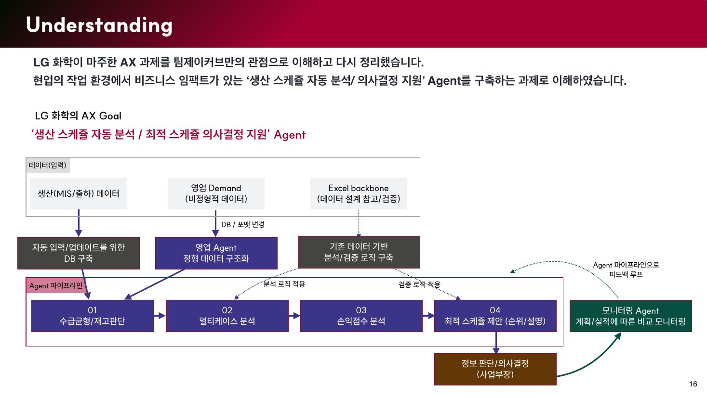
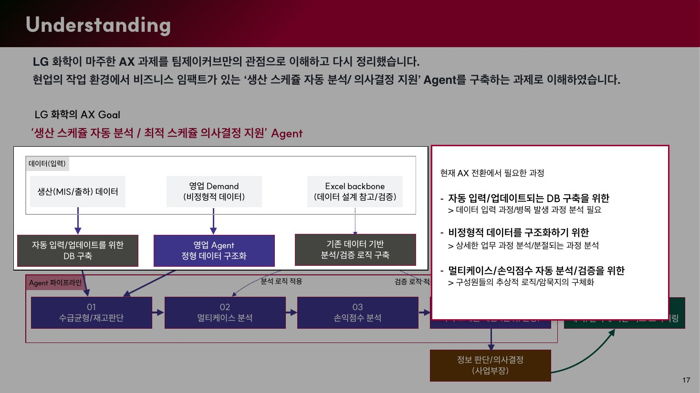
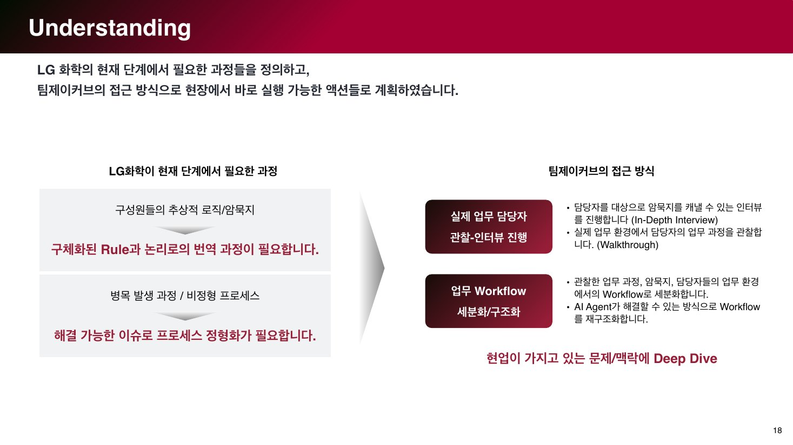
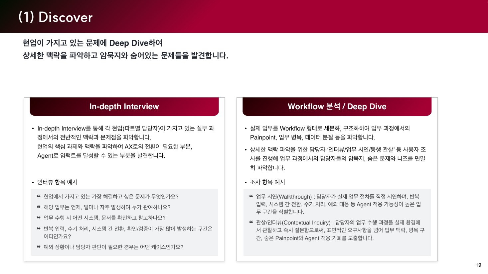
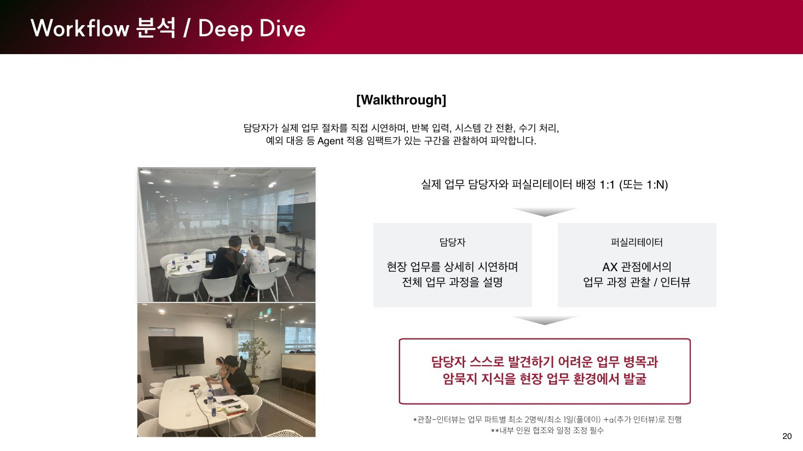
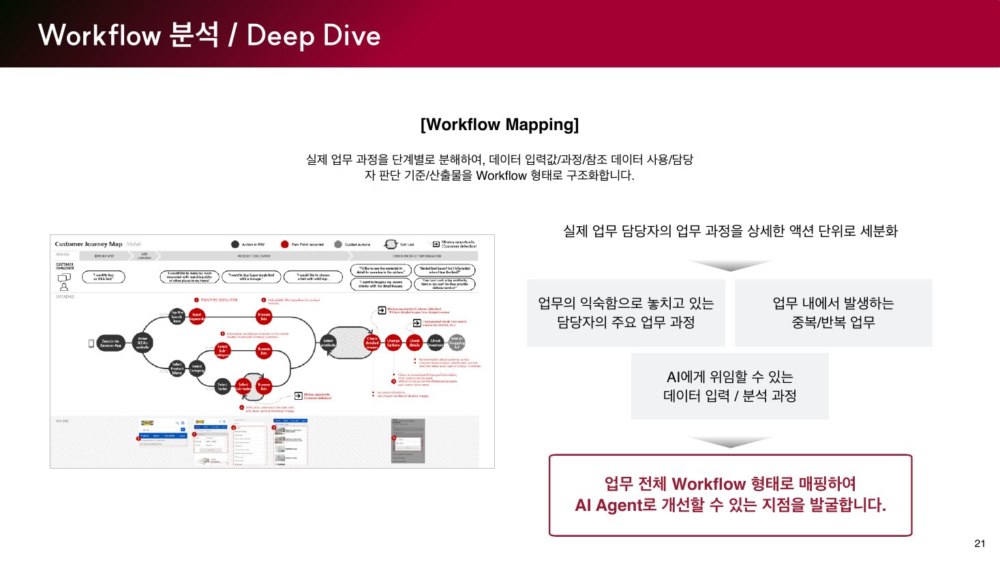
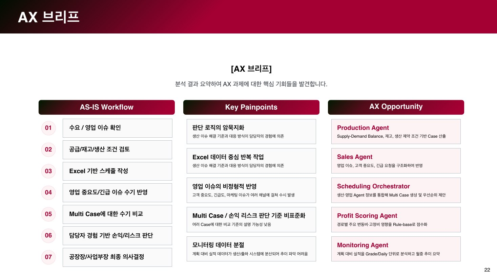
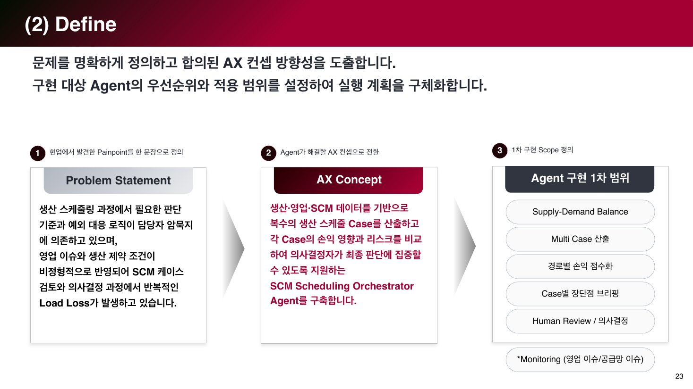

제안서 16쪽
Understanding · 과제 재정의
고객 목표를 데이터 입력 → Agent 파이프라인 → 의사결정으로 다시 그린 구조도
적용보조. 사례 장 오른쪽 이미지로 쓰면 '제안이 무엇을 만들려 했나'를 한 장에 보여 줌. 다만 리서치보다 솔루션 구조라 이 사례 핵심과는 거리 있음
출처: 팀제이커브_LG화학_제안서_v0.51.pdf 16 ~ 23쪽

제안서 16쪽
고객 목표를 데이터 입력 → Agent 파이프라인 → 의사결정으로 다시 그린 구조도
적용보조. 사례 장 오른쪽 이미지로 쓰면 '제안이 무엇을 만들려 했나'를 한 장에 보여 줌. 다만 리서치보다 솔루션 구조라 이 사례 핵심과는 거리 있음

제안서 17쪽
16쪽 위에 '현재 AX 전환에서 필요한 과정' 박스를 얹은 강조 버전
적용비추천. 16쪽과 중복, 화면이 어둡게 깔려 웹에서 읽기 어려움

제안서 18쪽
암묵지 → 관찰-인터뷰, 비정형 프로세스 → Workflow 구조화로 잇는 장
적용강력 추천. '리서치로 출발점을 찾는다'는 19쪽 제목과 바로 맞물림. 이미지보다 문장 2줄 + 화살표로 다시 그리는 게 웹에서 더 선명

제안서 19쪽
IDI 질문 5개 + Walkthrough·Contextual Inquiry 조사 항목
적용추천. 질문 예시 2~3개만 발췌해 '실제로 무엇을 물으려 했나'를 보여 주는 작은 인용 블록으로

제안서 20쪽
담당자-퍼실리테이터 1:1 구조, 현장 사진 2장, 파트별 최소 2명·1일 조건
적용추천(조건부). 사진이 있어 리서치 장면이 한눈에 보임. 사진 속 인물·장소가 어떤 세션인지 확인 필요 — LG화학 현장이 아니면 '진행 방식 예시'로 표기

제안서 21쪽
액션 단위 분해 → 반복 업무·AI 위임 지점 발굴. 예시 이미지는 커머스 고객 여정 지도
적용비추천(이미지). 왼쪽 예시가 LG화학과 무관한 고객 여정 지도라 오해 소지. 텍스트 흐름만 18쪽 요약에 흡수

제안서 22쪽
업무 흐름 7단계, 핵심 문제 5개, AI 에이전트 5종 3열 표
적용강력 추천. 리서치가 에이전트 설계로 이어지는 연결이 가장 잘 보이는 장. 현재 초안의 '업무 흐름 7단계 → 에이전트 5종' 흐름의 근거. 제안 단계 가설(고객 미팅 기반)임을 캡션에 표기 필요

제안서 23쪽
Problem Statement 한 문장 → AX Concept → 구현 1차 범위 5항목
적용추천. 22쪽과 짝. 22쪽을 메인 이미지로, 23쪽은 '1차 구축 범위'로 가는 마지막 단계를 텍스트로 요약